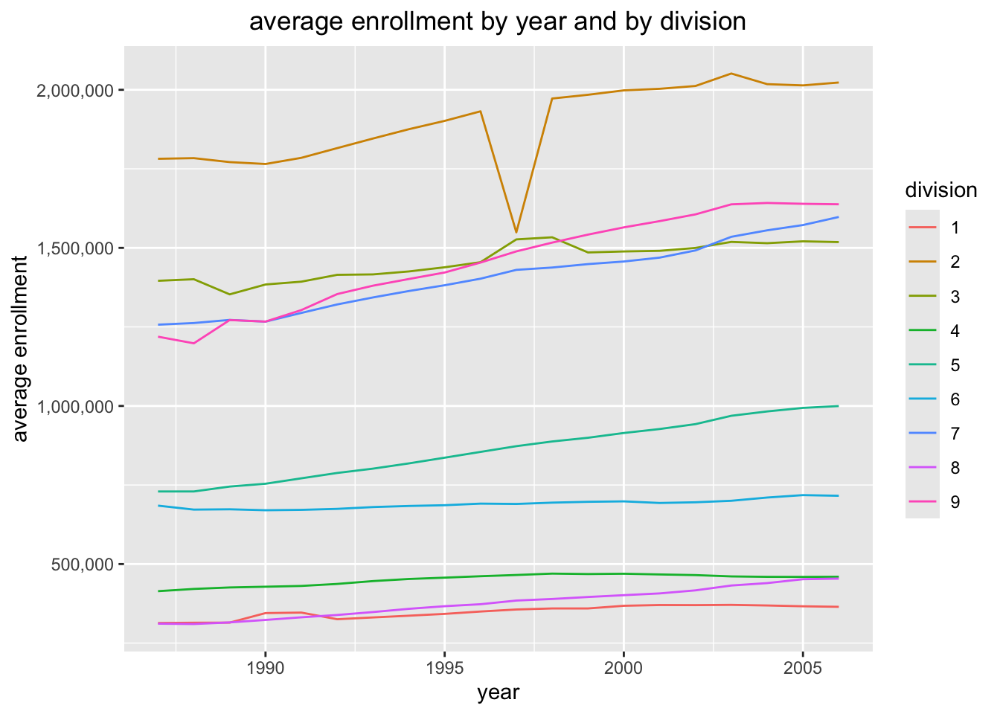
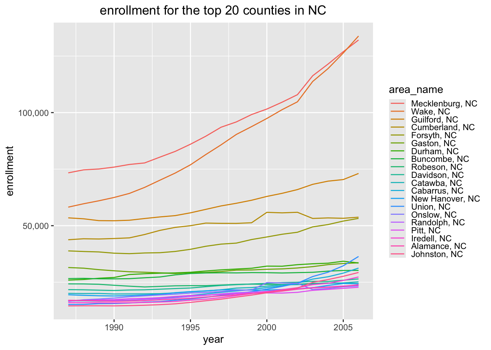
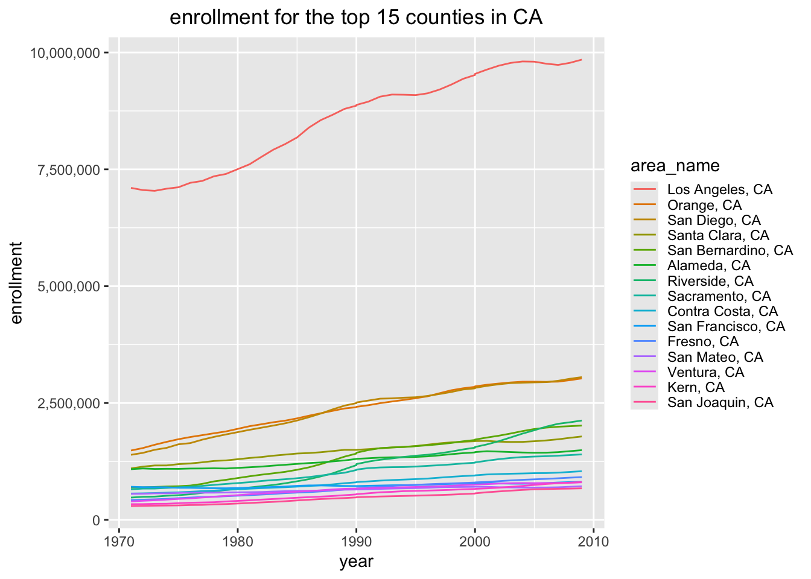
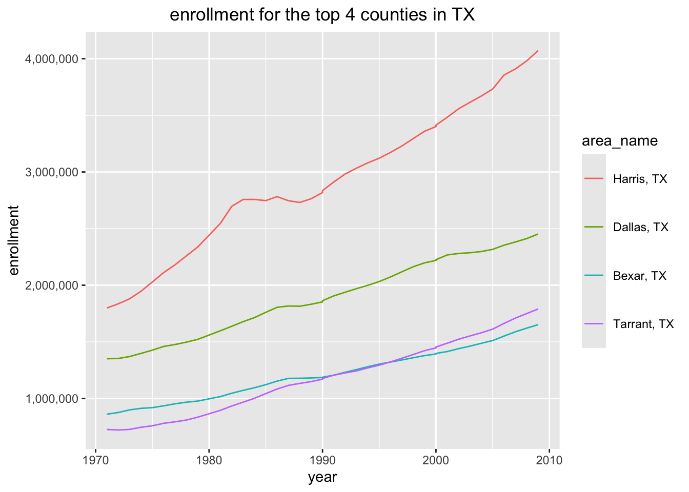
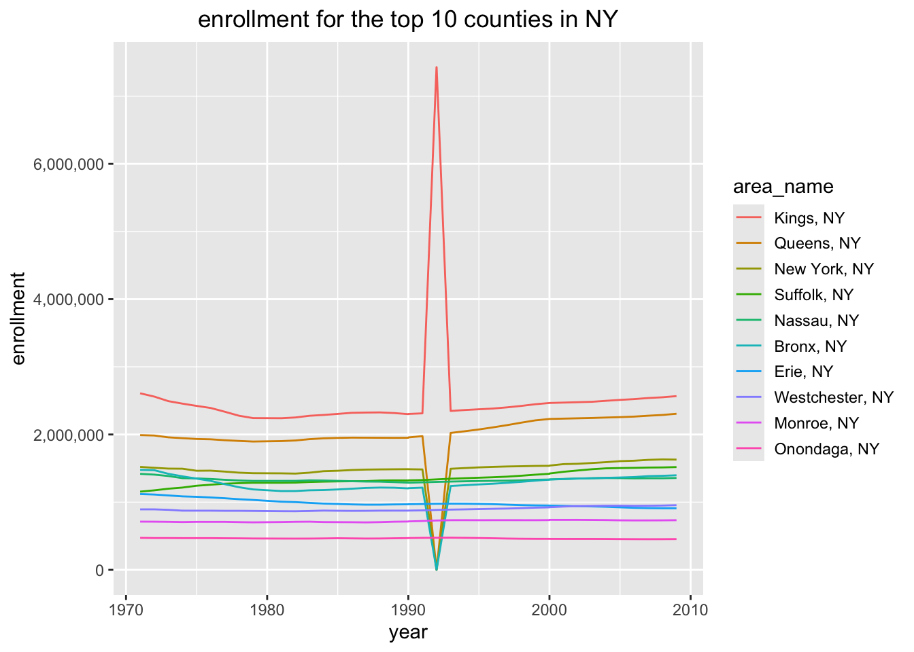

data_raw <- read_csv("https://www4.stat.ncsu.edu/~online/datasets/EDU01a.csv")
data_clean <- data_raw |>
select(Area_name,STCOU,ends_with("D")) |>
rename(area_name = Area_name) |>
arrange(area_name) |>
pivot_longer(cols = ends_with("D"),
names_to = "varcode",
values_to = "vals") |>
mutate(year = ifelse(as.numeric(substr(varcode,8,9))>25,as.numeric(substr(varcode,8,9))+1900,as.numeric(substr(varcode,8,9))+2000),measure=substr(varcode,1,7))ST 558 Project 1
Data Processing
Non-Function processing
To figure out the steps to processing data, we process the first input outside a function to ensure it is working correctly. Generally speaking, we read in the CSV file, selected the specified columns, pivoted to a longer form, and extracted the relevent value for year from the variable codes.
We then split the data into a separate tibble for state-level data and county-level data, filtering out the duplicate values for DC. In the state-level data, we also add a variable indicating each states “division” as designated by the United Stated Census Bureau. This results in the two tibbles output below.
countydata <- data_clean |>
slice(grep(pattern = ", \\w\\w", area_name))|>
mutate(state = substr(area_name,nchar(area_name)-1,nchar(area_name)))
class(countydata) <- c("county", class(countydata))
statedata <- data_clean |>
slice(grep(pattern = ", \\w\\w", area_name,invert=TRUE)) |>
mutate(division = ifelse(area_name %in% c("CONNECTICUT", "MAINE", "MASSACHUSETTS", "NEW HAMPSHIRE", "RHODE ISLAND", "VERMONT"),"1",
ifelse(area_name %in% c("NEW JERSEY","NEW YORK","PENNSYLVANIA"),"2",
ifelse(area_name %in% c("ILLINOIS","INDIANA","MICHIGAN","OHIO","WISCONSIN"),"3",
ifelse(area_name %in% c("IOWA","KANSAS","MINNESOTA","MISSOURI","NEBRASKA","NORTH DAKOTA","SOUTH DAKOTA"),"4",
ifelse(area_name %in% c("DELAWARE","FLORIDA","GEORGIA","MARYLAND","NORTH CAROLINA","SOUTH CAROLINA","VIRGINIA","DISTRICT OF COLUMBIA","WEST VIRGINIA"),"5",
ifelse(area_name %in% c("ALABAMA","KENTUCKY","MISSISSIPPI","TENNESSEE"),"6",
ifelse(area_name %in% c("ARKANSAS","LOUISIANA","OKLAHOMA","TEXAS"),"7",
ifelse(area_name %in% c("ARIZONA","COLORADO","IDAHO","MONTANA","NEVADA","NEW MEXICO","UTAH","WYOMING"),"8",
ifelse(area_name %in% c("ALASKA","CALIFORNIA","HAWAII","OREGON","WASHINGTON"),"9","ERROR"
))))))))))
class(statedata) <- c("state", class(statedata))
countydata# A tibble: 31,450 × 7
area_name STCOU varcode vals year measure state
<chr> <chr> <chr> <dbl> <dbl> <chr> <chr>
1 Abbeville, SC 45001 EDU010187D 3941 1987 EDU0101 SC
2 Abbeville, SC 45001 EDU010188D 3934 1988 EDU0101 SC
3 Abbeville, SC 45001 EDU010189D 3880 1989 EDU0101 SC
4 Abbeville, SC 45001 EDU010190D 3834 1990 EDU0101 SC
5 Abbeville, SC 45001 EDU010191D 3806 1991 EDU0101 SC
6 Abbeville, SC 45001 EDU010192D 3780 1992 EDU0101 SC
7 Abbeville, SC 45001 EDU010193D 3804 1993 EDU0101 SC
8 Abbeville, SC 45001 EDU010194D 3750 1994 EDU0101 SC
9 Abbeville, SC 45001 EDU010195D 3780 1995 EDU0101 SC
10 Abbeville, SC 45001 EDU010196D 3803 1996 EDU0101 SC
# ℹ 31,440 more rowsstatedata# A tibble: 530 × 7
area_name STCOU varcode vals year measure division
<chr> <chr> <chr> <dbl> <dbl> <chr> <chr>
1 ALABAMA 01000 EDU010187D 733735 1987 EDU0101 6
2 ALABAMA 01000 EDU010188D 728234 1988 EDU0101 6
3 ALABAMA 01000 EDU010189D 730048 1989 EDU0101 6
4 ALABAMA 01000 EDU010190D 728252 1990 EDU0101 6
5 ALABAMA 01000 EDU010191D 725541 1991 EDU0101 6
6 ALABAMA 01000 EDU010192D 726150 1992 EDU0101 6
7 ALABAMA 01000 EDU010193D 728014 1993 EDU0101 6
8 ALABAMA 01000 EDU010194D 730509 1994 EDU0101 6
9 ALABAMA 01000 EDU010195D 727989 1995 EDU0101 6
10 ALABAMA 01000 EDU010196D 736825 1996 EDU0101 6
# ℹ 520 more rowsFunction Processing
Now that we know the basic steps, we convert the process into 3 functions below for ease of reproducability across multiple input data files.
function_for_step_1_2 <- function(result, value){
longer_data <- result |>
select(Area_name,STCOU,ends_with("D")) |>
rename(area_name = Area_name) |>
arrange(area_name) |>
pivot_longer(cols = ends_with("D"),
names_to = "varcode",
values_to = value)
return(longer_data)
}
function_for_step_3 <- function(longer_data){
create_date_columns <- longer_data |>
mutate(year =
ifelse(as.numeric(substr(varcode,8,9))>25,
as.numeric(substr(varcode,8,9))+1900,
as.numeric(substr(varcode,8,9))+2000),
measure=substr(varcode,1,7))
return(create_date_columns)
}
function_for_steps4_5_6 <- function(create_date_columns){
countydata <- create_date_columns |>
slice(grep(pattern = ", \\w\\w", area_name))|>
mutate(state =
substr(area_name,nchar(area_name)-1,nchar(area_name)))
class(countydata) <- c("county", class(countydata))
statedata <- create_date_columns |>
slice(grep(pattern = ", \\w\\w", area_name,invert=TRUE)) |>
###Filtering out duplicate DC values###
filter(area_name != "District of Columbia") |>
mutate(division = ifelse(area_name %in% c("CONNECTICUT", "MAINE", "MASSACHUSETTS", "NEW HAMPSHIRE", "RHODE ISLAND", "VERMONT"),"1",
ifelse(area_name %in% c("NEW JERSEY","NEW YORK","PENNSYLVANIA"),"2",
ifelse(area_name %in% c("ILLINOIS","INDIANA","MICHIGAN","OHIO","WISCONSIN"),"3",
ifelse(area_name %in% c("IOWA","KANSAS","MINNESOTA","MISSOURI","NEBRASKA","NORTH DAKOTA","SOUTH DAKOTA"),"4",
ifelse(area_name %in% c("DELAWARE","FLORIDA","GEORGIA","MARYLAND","NORTH CAROLINA","SOUTH CAROLINA","VIRGINIA",
"DISTRICT OF COLUMBIA","WEST VIRGINIA"),"5",
ifelse(area_name %in% c("ALABAMA","KENTUCKY","MISSISSIPPI","TENNESSEE"),"6",
ifelse(area_name %in% c("ARKANSAS","LOUISIANA","OKLAHOMA","TEXAS"),"7",
ifelse(area_name %in% c("ARIZONA","COLORADO","IDAHO","MONTANA","NEVADA","NEW MEXICO","UTAH","WYOMING"),"8",
ifelse(area_name %in% c("ALASKA","CALIFORNIA","HAWAII","OREGON","WASHINGTON"),"9","ERROR"))))))))))
class(statedata) <- c("state", class(statedata))
return(list(countydata, statedata))
}We then create a wrapper function to automate the process, so we can now simply add a CSV file name/path, and optionally a specific value we would like if enrollment is no longer the measure of interest, to the function my_wrapper().
my_wrapper <- function(url, value = "enrollment"){
# assume URL is in quotes
result <- read_csv(url) |>
function_for_step_1_2(value) |>
function_for_step_3() |>
function_for_steps4_5_6()
}
result_tibbles <- my_wrapper(url="https://www4.stat.ncsu.edu/~online/datasets/EDU01a.csv")
countyData_Final <- result_tibbles[[1]]
stateData_Final <- result_tibbles[[2]]We additionally create a function to combine the processing results from multiple CSV files into one larger tibble.
combine_datasets <- function(results1, results2){
combined_county <- dplyr::bind_rows(results1[[1]],results2[[1]])
combined_state <- dplyr::bind_rows(results1[[2]],results2[[2]])
return(list(countyData = combined_county, stateData = combined_state))
}Data Summarization
We then turn our attention to a method for automatically summarizing the datasets created from our previous functions, specifically plotting the state-level data as a line chart for average enrollment by year, with different lines for each division, and the county-level data as a line chart for simple enrollment by year across counties, specifying a particular state and considering either the top n number of counties or the bottom n number of counties, where ordering is according to average enrollment across the entire time period.
plot.state <- function(df,var_name="enrollment"){
mean_data <- df |>
filter(division != "ERROR") |>
group_by(division,year) |>
summarize(var_avg = mean(get(var_name)))
g <- ggplot(mean_data,aes(x=year,y=var_avg,color=division))
g+geom_line()+labs(y=paste("average",var_name))
}
plot.county <- function(df,state_choice="NC",top_bottom="top",n_given=5,var_name="enrollment"){
mean_data <- df |>
filter(state == state_choice) |>
group_by(area_name) |>
summarize(var_avg = mean(get(var_name)))
ifelse(tolower(top_bottom)=="top", mean_data <- mean_data |> arrange(desc(var_avg)),
ifelse(tolower(top_bottom)=="bottom",
mean_data <- mean_data |>
arrange(var_avg),
return("ERROR, please specify 'top' or 'bottom'")))
mean_data <- mean_data |> slice(1:n_given)
plot_data <- left_join(mean_data,df, by = "area_name")
###Prompt seemed a little unclear, but I think for the county data we are supposed to be plotting the actual data values for enrollment per year, with different lines for the top/bottom n specified counties? That should be completed here. - TB
g <- ggplot(plot_data,aes(x=year,y=get(var_name),color=area_name))
g+geom_line()+labs(y=var_name)
}Put it Together
Now that we have developed all of our functions, we can make sure they work correctly and run them in the same location. First, we run the functions to process and create a final combined dataset out for the EDU01a and EDU01b CSV files.
finalCombo <- combine_datasets(results1 = my_wrapper("https://www4.stat.ncsu.edu/~online/datasets/EDU01a.csv"), results2 = my_wrapper("https://www4.stat.ncsu.edu/~online/datasets/EDU01b.csv"))
finalCombo$countyData
# A tibble: 62,900 × 7
area_name STCOU varcode enrollment year measure state
<chr> <chr> <chr> <dbl> <dbl> <chr> <chr>
1 Abbeville, SC 45001 EDU010187D 3941 1987 EDU0101 SC
2 Abbeville, SC 45001 EDU010188D 3934 1988 EDU0101 SC
3 Abbeville, SC 45001 EDU010189D 3880 1989 EDU0101 SC
4 Abbeville, SC 45001 EDU010190D 3834 1990 EDU0101 SC
5 Abbeville, SC 45001 EDU010191D 3806 1991 EDU0101 SC
6 Abbeville, SC 45001 EDU010192D 3780 1992 EDU0101 SC
7 Abbeville, SC 45001 EDU010193D 3804 1993 EDU0101 SC
8 Abbeville, SC 45001 EDU010194D 3750 1994 EDU0101 SC
9 Abbeville, SC 45001 EDU010195D 3780 1995 EDU0101 SC
10 Abbeville, SC 45001 EDU010196D 3803 1996 EDU0101 SC
# ℹ 62,890 more rows
$stateData
# A tibble: 1,040 × 7
area_name STCOU varcode enrollment year measure division
<chr> <chr> <chr> <dbl> <dbl> <chr> <chr>
1 ALABAMA 01000 EDU010187D 733735 1987 EDU0101 6
2 ALABAMA 01000 EDU010188D 728234 1988 EDU0101 6
3 ALABAMA 01000 EDU010189D 730048 1989 EDU0101 6
4 ALABAMA 01000 EDU010190D 728252 1990 EDU0101 6
5 ALABAMA 01000 EDU010191D 725541 1991 EDU0101 6
6 ALABAMA 01000 EDU010192D 726150 1992 EDU0101 6
7 ALABAMA 01000 EDU010193D 728014 1993 EDU0101 6
8 ALABAMA 01000 EDU010194D 730509 1994 EDU0101 6
9 ALABAMA 01000 EDU010195D 727989 1995 EDU0101 6
10 ALABAMA 01000 EDU010196D 736825 1996 EDU0101 6
# ℹ 1,030 more rowsNext we create our desired visualizations, plotting the state-level data, and including a few separate plots for the county-level data: one for the top 20 counties in NC, one for the bottom counties in SC, one using only defaults, and one with the top 8 counties in PA.
plot(finalCombo[[2]])
plot(finalCombo[[1]],state_choice="NC",top_bottom="top",n_given=20)
plot(finalCombo[[1]],state_choice="SC",top_bottom="bottom",n_given=7)plot(finalCombo[[1]])plot(finalCombo[[1]],state_choice="PA",top_bottom="top",n_given=8)Lastly, we repeat this process for four additional datasets, processsing each, combining them together, plotting the state data, plotting the top 15 counties in CA, the top 4 counties in TX, plotting county data only using defaults, and plotting the top 10 counties in NY.
first_new_URL <- my_wrapper(url="https://www4.stat.ncsu.edu/~online/datasets/PST01a.csv")
second_new_URL <- my_wrapper(url="https://www4.stat.ncsu.edu/~online/datasets/PST01b.csv")
third_new_URL <- my_wrapper(url="https://www4.stat.ncsu.edu/~online/datasets/PST01c.csv")
fourth_new_URL <- my_wrapper(url="https://www4.stat.ncsu.edu/~online/datasets/PST01d.csv")
combine1 <- combine_datasets(results1 = first_new_URL, results2 = second_new_URL)
combine2 <- combine_datasets(results1 = combine1, results2 = third_new_URL)
combine3 <- combine_datasets(results1 = combine2, results2 = fourth_new_URL)
combine3$countyData
# A tibble: 125,800 × 7
area_name STCOU varcode enrollment year measure state
<chr> <chr> <chr> <dbl> <dbl> <chr> <chr>
1 Abbeville, SC 45001 PST015171D 21506 1971 PST0151 SC
2 Abbeville, SC 45001 PST015172D 21544 1972 PST0151 SC
3 Abbeville, SC 45001 PST015173D 21623 1973 PST0151 SC
4 Abbeville, SC 45001 PST015174D 21860 1974 PST0151 SC
5 Abbeville, SC 45001 PST015175D 22061 1975 PST0151 SC
6 Abbeville, SC 45001 PST015176D 22245 1976 PST0151 SC
7 Abbeville, SC 45001 PST015177D 22637 1977 PST0151 SC
8 Abbeville, SC 45001 PST015178D 22933 1978 PST0151 SC
9 Abbeville, SC 45001 PST015179D 22873 1979 PST0151 SC
10 Abbeville, SC 45001 PST025181D 22788 1981 PST0251 SC
# ℹ 125,790 more rows
$stateData
# A tibble: 2,080 × 7
area_name STCOU varcode enrollment year measure division
<chr> <chr> <chr> <dbl> <dbl> <chr> <chr>
1 ALABAMA 01000 PST015171D 3497452 1971 PST0151 6
2 ALABAMA 01000 PST015172D 3540080 1972 PST0151 6
3 ALABAMA 01000 PST015173D 3580769 1973 PST0151 6
4 ALABAMA 01000 PST015174D 3627805 1974 PST0151 6
5 ALABAMA 01000 PST015175D 3680533 1975 PST0151 6
6 ALABAMA 01000 PST015176D 3737204 1976 PST0151 6
7 ALABAMA 01000 PST015177D 3782736 1977 PST0151 6
8 ALABAMA 01000 PST015178D 3834120 1978 PST0151 6
9 ALABAMA 01000 PST015179D 3869444 1979 PST0151 6
10 ALABAMA 01000 PST025181D 3918526 1981 PST0251 6
# ℹ 2,070 more rowsplot(combine3[[2]])
plot(combine3[[1]], "CA", "top", 15)
plot(combine3[[1]], "TX", "top", 4)
plot(combine3[[1]])plot(combine3[[1]], "NY", "top", 10)